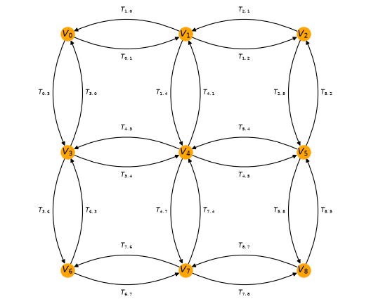
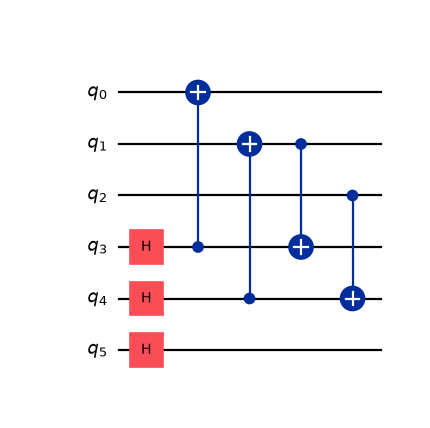
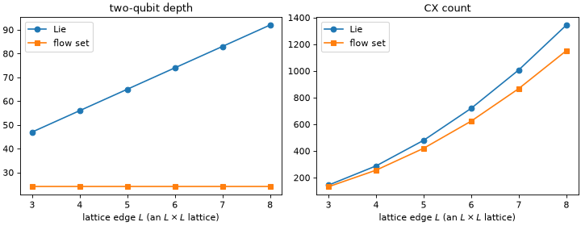

Simulate 2D Fermi-Hubbard dynamics with flow sets¶
Important
The concepts in this guide are currently available only in the Python API. Equivalent functionality will be made available in the C API in a future release.
See also
Read the 1D flow-set guide first. This guide is
its two-dimensional sequel and does not repeat the information developed there: transfer
and vertex operators, what a flow set is, how groups
survives into the circuit, and how a custom encoding is wired into the transpiler
through MapperFnEvolutionSynthesis.
See the transpilation guide for the transpiler stages referenced throughout, and the mappers guide for the general recipe for writing a custom mapper.
The 1D guide ended by mentioning that local encodings are needed when working with two dimensions. This guide takes that step, for the two-dimensional Fermi-Hubbard model on a square lattice, using the Verstraete-Cirac (VC) encoding [2].
There are three differences from the 1D problem, forming the basis of this work:
- The flow sets multiply. A chain has two arrow orientations; a square lattice has
four (east, west, north, south), and each is a union of vertex-disjoint directed paths (one per lattice row or column) rather than a single path.
- The encoding gains an ancilla per site, not one for the whole system, giving a
qubit-to-mode ratio of \(2\). Transfer operators become weight-3 (horizontal) and weight-4 (vertical) Paulis, and each of the four flow sets maps to its own Pauli shape, so each needs its own diagonalizing Clifford.
- The encoded Hamiltonian is only faithful on a subspace: the joint \(+1\)
eigenspace of the plaquette constraints that every 2D local encoding carries [2] [3]. In 1D the encoding was a plain isometry and the verification was a spectrum check. Here, the comparison has to be projected, as step 9 illustrates.
The payoff is the same shape as in 1D: the two-qubit depth of one Trotter step becomes constant in the lattice size, at \(24\) (\(16\) for the hopping, matching Ref. [1], plus \(8\) for the interaction), while a term-by-term Trotterization of the same encoded Hamiltonian grows linearly. The gate count still grows with the number of bonds, of course; what becomes size-independent is how many layers those gates occupy. Depths throughout are counted on an abstract, fully connected register; mapping the encoding onto a device’s restricted coupling map is its own problem, which is discussed at the end.
The lattice and its four orientations¶
The first change is visible on the directed interaction graph. Sites
are numbered in row-major order, site(r, c) = r * cols + c, and every bond carries both
orientations, as the chain did in 1D, but now the bonds run along two axes:
{kind=link}
{kind=link}

The commutation rule is the 1D one, unchanged: two transfer operators sharing a site commute when the arrows flow through it and anticommute when they clash. However, a site now has up to four incident bonds rather than two, so the arrows through it can clash in more ways, and a set of arrows that never clashes is no longer a single path. Reading the horizontal arrows left-to-right gives one such set, the vertical arrows from top-to-bottom gives another, and reversing each gives two more. These are the east, west, north, and south flow sets that organize everything that follows.
The Verstraete-Cirac encoding¶
Verstraete-Cirac (VC) pairs every fermionic mode \(j\) with its own auxiliary qubit. With \(N\) lattice sites, mode \(j\) lives on qubit \(j\) and its ancilla is on qubit \(N + j\), so the register holds \(2N\) qubits. Vertex operators stay as simple as they can be,
which is what makes the occupations directly readable later. Transfer operators depend on the edge orientation. For a horizontal edge \(j \to k\) with \(j\) the western site, and a vertical edge with \(j\) the northern site,
a weight-3 “triangle” and a weight-4 “square”. Identifying each arrow matters: with
\(j\) as the western site, \(j \to k\) points east, but with \(j\) as the northern
site, it points south. The reverse orientations follow from the identity
\(T_{kj} = -V_j V_k T_{jk}\), which turns the XXZ triangle into YYZ, and
the XYXY square into YXXY. Those four distinct labels are the four flow
sets, and the rest of this guide tracks them.
Note
These are not quite Eq. (A1) of Ref. [1], which states “up to single-qubit rotations” and differs in three ways worth naming, since a reader checking the paper will notice:
The prefactor: Eq. (A1) carries none. The \(\tfrac12\) here is what makes \(T_{jk}^2 = \tfrac14\), matching the normalization \(T_{jk} = -\tfrac12 (a^\dagger_j - a_j)(a^\dagger_k + a_k)\) that
TransferVertexOperatoruses. The paper only ever needs its transfer operators inside \(\exp(-i\,dt\,H)\), where a scale factor is absorbed into the rotation angle; here they have to be operators that satisfy an identity.Orientation: Eq. (A1) selects letters by the row parity of \(j\), which for a horizontal edge is the same for both endpoints, so it does not distinguish \(T_{jk}\) from \(T_{kj}\). The paper recovers the orientation separately, by conjugating with a layer of \(R^Z(\pi/2)\). This guide instead folds it into the encoding, deriving the reverse from \(T_{kj} = -V_j V_k T_{jk}\), which is what makes the two orientations land on different Paulis in step 3.
The vertical shape: Eq. (A1) alternates
XXXXandYYYYby row parity, where this guide uses a singleXYXY. These are two ways of getting the same thing: a letter asymmetry that makes a vertical edge clash correctly with the horizontal edges meeting it. Do not read the difference as a free basis choice. Dropping the parity alternation and using a singleXXXXbreaks the algebra outright, which is why the distinct letters are checked rather than assumed.
Note
The ancilla is attached to a site, giving the ratio \(2\); it is the Derby-Klassen encoding that places an auxiliary qubit per (odd) plaquette, for the smaller ratio \(3/2\). VC is used here because its transfer operators are the ones whose diagonalizing Cliffords Ref. [1] gives in closed form.
1. The Hamiltonian on a square lattice¶
The construction is the same as in 1D, but with a two-dimensional edge list. Sites keep the row-major
numbering used for the figure above, site(r, c) = r * cols + c, so that horizontal bonds
connect consecutive indices, and vertical bonds connect indices differing by cols:
>>> from collections import defaultdict
>>> from qiskit_fermions.operators import TransferVertexOperator
>>>
>>> def fermi_hubbard_2d(rows, cols, tunneling, interaction):
... site = lambda r, c: r * cols + c
... edges = [(site(r, c), site(r, c + 1)) for r in range(rows) for c in range(cols - 1)]
... edges += [(site(r, c), site(r + 1, c)) for r in range(rows - 1) for c in range(cols)]
... data: defaultdict[tuple[tuple[int, int], ...], complex] = defaultdict(complex)
... for j, k in edges:
... # hopping: -t (a^dag_j a_k + a^dag_k a_j) = t (T_jk + T_kj)
... data[((j, k),)] += tunneling
... data[((k, j),)] += tunneling
... # interaction: U n_j n_k with n_j = (1 - V_j) / 2
... data[()] += interaction / 4
... data[((j, j),)] -= interaction / 4
... data[((k, k),)] -= interaction / 4
... data[((j, j), (k, k))] += interaction / 4
... return TransferVertexOperator.from_dict(data)
>>>
>>> rows, cols = 3, 3
>>> num_sites = rows * cols
>>> hamiltonian = fermi_hubbard_2d(rows, cols, tunneling=1.0, interaction=2.0)
>>> print(f"Number of terms: {len(hamiltonian)}")
Number of terms: 46
2. Four flow sets instead of two¶
Each hopping term is classified by the direction its arrow points on the lattice. Comparing
the divmod row/column coordinates of the two endpoints separates horizontal from
vertical edges, and the sign of the difference picks the orientation. Everything diagonal
(the identity, the \(V_j\) and the \(V_j V_k\) terms) goes into a fifth group:
Note
Orientation convention. The names are simply read off the figure above: an arrow is east or west as it points right or left along a row, and north or south as it points up or down a column. Since the numbering runs row-major, east and south are the index-increasing directions. Nothing downstream depends on the names (they only label groups), but they are easy to confuse, so it is worth fixing them against the picture. Ref. [1] names its square-lattice flow sets the same way.
>>> EAST, WEST, NORTH, SOUTH, DIAGONAL = range(5)
>>>
>>> def flow_set_groups(operator, cols):
... groups = []
... for terms, _ in operator.iter_terms():
... if len(terms) == 1 and terms[0][0] != terms[0][1]:
... j, k = terms[0]
... row_j, col_j = divmod(j, cols)
... row_k, col_k = divmod(k, cols)
... if row_j == row_k:
... groups.append(EAST if col_k > col_j else WEST)
... else:
... groups.append(SOUTH if row_k > row_j else NORTH)
... else:
... groups.append(DIAGONAL)
... return groups
>>>
>>> hamiltonian.groups = flow_set_groups(hamiltonian, cols)
>>>
>>> names = ["east", "west", "north", "south", "diagonal"]
>>> for index, name in enumerate(names):
... count = sum(1 for group in hamiltonian.groups if group == index)
... print(f"{name:9s} {count:2d}")
east 6
west 6
north 6
south 6
diagonal 22
Within one flow set every arrow either meets another head-to-tail or does not meet it at
all, as in 1D, so a flow set still commutes term-by-term and its evolution
carries no Trotter error. What is new is that a flow set is now disconnected: the east
set of a rows x cols lattice consists of rows independent left-to-right paths. That
disconnection is a gift rather than a complication, as step 6 shows.
3. Encode the operator¶
The encoding is one function that maps a single generalized transfer operator to a Pauli
string, which is handed to map_transfer_vertex_generators(). Compared with the 1D version, the
body has more cases: diagonal, horizontal, vertical, and the reverse orientations through
\(T_{kj} = -V_j V_k T_{jk}\).
There is one problem. map_transfer_vertex_generators() calls back with a generator and
nothing else, while deciding a bond’s Pauli string also needs cols to recover row and column
coordinates from a mode index. Rather than nest the functions to close over it,
functools.partial() binds it, which keeps both functions at the top level and
independently callable.
>>> from functools import partial
>>>
>>> from qiskit.quantum_info import SparseObservable
>>> from qiskit_fermions.mappers import map_transfer_vertex_generators
>>>
>>> def ancilla_qubit(mode, num_sites):
... """The auxiliary qubit paired with fermionic mode `mode`."""
... return num_sites + mode
>>>
>>> def vc_action(generator, width, cols):
... """Map one generalized transfer operator to its Verstraete-Cirac Pauli."""
... num_sites = width // 2
... ancilla = partial(ancilla_qubit, num_sites=num_sites)
... j, k = generator
... if j == k: # vertex operator V_j = Z_j
... return SparseObservable.from_sparse_list([("Z", [j], 1.0)], num_qubits=width)
... row_j, col_j = divmod(j, cols)
... row_k, col_k = divmod(k, cols)
... if row_j == row_k: # horizontal: weight-3 triangle
... left, right = (j, k) if col_j < col_k else (k, j)
... operator = SparseObservable.from_sparse_list(
... [("XXZ", [left, right, ancilla(left)], 0.5)], num_qubits=width
... )
... forward = (j, k) == (left, right)
... else: # vertical: weight-4 square
... up, down = (j, k) if row_j < row_k else (k, j)
... operator = SparseObservable.from_sparse_list(
... [("XYXY", [up, down, ancilla(up), ancilla(down)], 0.5)], num_qubits=width
... )
... forward = (j, k) == (up, down)
... if forward:
... return operator
... # reverse orientation: T_kj = -V_j V_k T_jk
... v_j = SparseObservable.from_sparse_list([("Z", [j], 1.0)], num_qubits=width)
... v_k = SparseObservable.from_sparse_list([("Z", [k], 1.0)], num_qubits=width)
... return (-1.0 * v_j.compose(v_k).compose(operator)).simplify()
>>>
>>> def vc_encoding(operator, width, cols):
... """Map a TransferVertexOperator to a qubit observable, Verstraete-Cirac style."""
... return map_transfer_vertex_generators(
... operator,
... partial(vc_action, width=width, cols=cols),
... identity=lambda: SparseObservable.identity(width),
... compose=SparseObservable.compose,
... ).simplify()
>>>
>>> # bind the lattice width once; the transpiler only ever passes (operator, width)
>>> encoding = partial(vc_encoding, cols=cols)
>>> num_qubits = 2 * num_sites
>>> num_qubits
18
The point of grouping before mapping can be seen immediately: each flow set encodes to a single Pauli shape, uniform across the whole set.
>>> for index, name in enumerate(names):
... observable = encoding(hamiltonian.split_out_groups()[index], num_qubits)
... shapes = sorted({label for label, _, _ in observable.to_sparse_list()})
... print(f"{name:9s} {shapes}")
east ['XXZ']
west ['YYZ']
north ['YXXY']
south ['XYXY']
diagonal ['', 'Z', 'ZZ']
The four hopping shapes are distinct, so each flow set gets its own Clifford in step 5. The reverse orientations are different Paulis, not the same ones relabeled; this is the why a 2D flow-set synthesis needs four circuits, where the 1D synthesis needs one.
4. Transpile with the custom encoding¶
This stage is the 1D one with a wider qubit register:
CustomF2QLayout maps the \(N\)-mode register onto \(2N\) qubits,
MapperFnEvolutionSynthesis carries the encoding, and its product_formula
argument selects how the resulting
PauliEvolutionGate is decomposed. Compare
step 6 of the 1D guide, which builds the same pipeline for a
single ancilla.
>>> from qiskit.circuit import QuantumRegister
>>> from qiskit.passmanager import MultiStagePassManager
>>> from qiskit.synthesis import LieTrotter
>>> from qiskit_fermions.circuit import FermionicCircuit
>>> from qiskit_fermions.circuit.library import Evolution
>>> from qiskit_fermions.transpiler import FermionicCircuitToDAG, QuantumDAGToCircuit
>>> from qiskit_fermions.transpiler.passes import (
... CustomF2QLayout,
... F2QSynthesis,
... MapperFnEvolutionSynthesis,
... )
>>>
>>> total_time = 1.0
>>>
>>> def flow_set_pass_manager(mode_register, encoding, product_formula=None):
... """Build the pipeline mapping `mode_register` with the VC `encoding`."""
... synthesis = F2QSynthesis()
... synthesis.methods["Evolution"] = MapperFnEvolutionSynthesis(
... encoding, product_formula=product_formula
... )
... # this encoding spends one ancilla per fermionic mode
... qubit_register = QuantumRegister(2 * mode_register.size, "q")
... return MultiStagePassManager(
... input=FermionicCircuitToDAG(),
... layout=CustomF2QLayout({mode_register: qubit_register}),
... synthesis=synthesis,
... output=QuantumDAGToCircuit(),
... )
>>>
>>> circuit = FermionicCircuit(num_sites)
>>> circuit.append(Evolution(num_sites, hamiltonian, time=total_time), circuit.modes)
>>>
>>> # as in 1D, one decompose() splits the Evolution group by group -- five gates here,
>>> # the four hopping flow sets in group order, then the diagonal interaction
>>> flow_set_circuit = circuit.decompose()
>>> flow_set_circuit.count_ops()["Evolution"]
5
Five gates, carrying the 6, 6, 6, 6, and 22 terms counted in step 2. Each is mapped and synthesized independently, so the partition decided at the fermionic level survives all the way into the circuit:
>>> pass_manager = flow_set_pass_manager(flow_set_circuit.register, encoding, LieTrotter())
>>> qubit_circuit = pass_manager.run(flow_set_circuit)
>>> qubit_circuit.num_qubits
18
>>>
>>> def two_qubit_stats(circuit):
... decomposed = circuit.decompose(reps=6)
... two_qubit = lambda instruction: len(instruction.qubits) == 2
... return decomposed.count_ops().get("cx", 0), decomposed.depth(two_qubit)
>>>
>>> two_qubit_stats(qubit_circuit)
(144, 47)
That is the baseline: the encoding and the grouping are both in place, but
LieTrotter synthesizes each flow set term by term, and the
depth grows with the lattice.
5. A depth-2 Clifford per flow set¶
The mechanism is the same as in 1D: conjugate a whole commuting flow set by a Clifford that maps
each of its terms to a distinct weight-1 Pauli, so that the evolution of the entire
set costs only single-qubit rotations. In 1D, one brickwork of CZ gates did this.
In 2D, each flow set needs its own circuit, following Section IV C and Fig. 7 of Ref. [1]. All four act on one line of the lattice at a time (a row for east/west, a column for north/south) together with that line’s ancillas, and all four have the same three-part shape:
A layer of single-qubit rotations, putting each qubit in the basis its flow set needs.
A first
CXlayer, always site-to-ancilla on the same site.A second
CXlayer, coupling neighbors along the line.
Steps 2 and 3 are the only two-qubit layers, so the two-qubit depth is \(2\), regardless of how long the line is. They are written out one function per flow set below. The rotations are what they are because they were found, by conjugating each flow set’s terms and requiring distinct weight-1 images, so treat them as given and rely on the check that follows.
The two horizontal sets are the simplest. Their terms are weight-3, XXZ and YYZ, and
differ only by the extra \(S\) that turns \(X\) into \(Y\) on the sites:
>>> from qiskit.circuit import QuantumCircuit
>>>
>>> def east_clifford(circuit, line, ancilla):
... """Diagonalize the east flow set (XXZ) on one lattice row."""
... for j in line:
... circuit.h(ancilla(j))
... for j in line[:-1]: # layer 1: each site with its own ancilla
... circuit.cx(ancilla(j), j)
... for j, k in zip(line, line[1:]): # layer 2: ancilla with the next site along
... circuit.cx(k, ancilla(j))
>>>
>>> def west_clifford(circuit, line, ancilla):
... """Diagonalize the west flow set (YYZ) on one lattice row."""
... for j in line:
... circuit.s(j) # the only difference from east: X -> Y on the sites
... circuit.h(ancilla(j))
... for j in line[:-1]:
... circuit.cx(ancilla(j), j)
... for j, k in zip(line, line[1:]):
... circuit.cx(k, ancilla(j))
The two vertical sets are weight-4, XYXY and YXXY, and are correspondingly busier:
the rotations alternate with the position along the line, and the second CX layer
alternates too, coupling sites on even positions and ancillas on odd ones (or the reverse):
>>> def south_clifford(circuit, line, ancilla):
... """Diagonalize the south flow set (XYXY) on one lattice column."""
... for position, j in enumerate(line):
... if position % 2 == 0:
... circuit.sdg(ancilla(j))
... circuit.h(ancilla(j))
... else:
... circuit.h(j)
... circuit.s(j)
... circuit.h(ancilla(j))
... circuit.s(ancilla(j))
... for j in line: # layer 1
... circuit.cx(ancilla(j), j)
... for position, (j, k) in enumerate(zip(line, line[1:])): # layer 2
... if position % 2 == 0:
... circuit.cx(ancilla(j), ancilla(k)) # ancilla to ancilla
... else:
... circuit.cx(j, k) # site to site
>>>
>>> def north_clifford(circuit, line, ancilla):
... """Diagonalize the north flow set (YXXY) on one lattice column."""
... for position, j in enumerate(line):
... if position % 2 == 0:
... circuit.h(ancilla(j))
... circuit.s(ancilla(j))
... else:
... circuit.h(j)
... circuit.s(j)
... circuit.sdg(ancilla(j))
... circuit.h(ancilla(j))
... for j in line: # layer 1
... circuit.cx(ancilla(j), j)
... for position, (j, k) in enumerate(zip(line, line[1:])): # layer 2
... if position % 2 == 0:
... circuit.cx(k, j) # site to site, and the other way round from south
... else:
... circuit.cx(ancilla(j), ancilla(k))
Drawn on a single three-site line (its sites first, then their ancillas) the whole
mechanism fits in one picture. The triangle shape is the clearer of the two: a basis change
on the ancillas, then two CX layers, the first pairs each site with its own ancilla
and the second reaches to the next site along the line.
>>> line = [0, 1, 2] # three sites, with ancillas on qubits 3, 4, 5
>>> triangle = QuantumCircuit(6)
>>> east_clifford(triangle, line, lambda mode: 3 + mode)
>>> triangle.draw("mpl")
<Figure size ... with 1 Axes>
{kind=link}
{kind=link}

The square shape needs more single-qubit work (the rotations alternate along the line)
and its second CX layer alternates between coupling sites and coupling ancillas:
>>> square = QuantumCircuit(6)
>>> south_clifford(square, line, lambda mode: 3 + mode)
>>> square.draw("mpl")
<Figure size ... with 1 Axes>
{kind=link}
{kind=link}

Both are two CX layers deep, and adding sites to the line widens them without deepening
them; that is the whole constant-depth claim, visible by inspection. The west and north
Cliffords differ only in their single-qubit layers, so they are not drawn separately.
What the synthesis still needs is determining where each term ends up. A line of \(L\) sites carries
\(L - 1\) bonds, each contributing one term, so the helper below returns one entry per
bond: the qubit that the term landed on, and the single-qubit Pauli it became. Crucially, these are
read off the conjugation rather than predicted. Unlike 1D, where one CZ brickwork
maps \(X_{j+1} \mapsto Z_j X_{j+1} Z_{j+2}\) in closed form, there is no such formula
here, and the ancillas of a column line are not contiguous. The only thing that differs
between the flow sets is the Pauli string going in, which step 3 already printed:
>>> from qiskit.quantum_info import Clifford, SparsePauliOp
>>>
>>> def clifford_supports(clifford, pauli, line, ancilla, num_qubits):
... """Conjugate a flow set's terms to find which qubit each one lands on.
...
... `pauli` is the flow set's Pauli string, as printed in step 3. Its letters apply
... to the i-th term's qubits in the order below: the two sites of the bond, then
... their ancillas.
... """
... supports = []
... for i in range(len(line) - 1):
... qubits = [line[i], line[i + 1], ancilla(line[i]), ancilla(line[i + 1])]
... term = SparsePauliOp.from_sparse_list(
... [(pauli, qubits[: len(pauli)], 1.0)], num_qubits=num_qubits
... )
... image = term.paulis[0].evolve(clifford, frame="s")
... # a weight-1 image has exactly one qubit with an X and/or Z bit set
... (support,) = np.nonzero(image.x | image.z)
... assert len(support) == 1, f"term {i} is not weight-1"
... supports.append((int(support[0]), image[support].to_label()))
... return supports
The images must come out distinct and weight-1, so that each term can be rotated
independently on its own qubit; the two-qubit depth of \(2\) is already visible in the
four constructions above, each emitting two CX layers irrespective of the line length.
Below, both properties are checked across every flow set, every line, and several lattice
sizes. Step 6 then calls clifford_supports, so it is a working part of the
synthesis rather than only a demonstration.
6. Flow-set-aware synthesis¶
The synthesis gets a helpful head start. Because Evolution splits itself group by
group, synthesize is called once per flow set (five times here, four hopping sets
plus the diagonal group) so every hopping term it sees shares one Pauli shape, and one
Clifford diagonalizes all of them. It only has to read that shape off the first term and sort
the rest by which line they sit on. Then comes the observation that makes two dimensions
cheaper than one might fear:
Important
The components of a single flow set are vertex-disjoint: the west set’s rows share no qubits. So all of a flow set’s Cliffords can be emitted together and they share the same two two-qubit layers, rather than queueing up one row after another. A flow set therefore costs a fixed number of layers (two for the Clifford and two for its inverse) no matter how many rows or columns the lattice has, which is why the total depth ends up constant.
>>> from qiskit.synthesis.evolution import EvolutionSynthesis
>>>
>>> # The interaction couples nearest neighbours only, so every interior site carries four
>>> # Rzz gates -- one per bond -- and can only do one at a time: four layers is the best
>>> # any schedule can achieve. Horizontal bonds split by column parity, vertical ones by
>>> # row parity, which achieves it.
>>> def rzz_layers(circuit, angles, cols):
... """Emit the diagonal Rzz gates in four layers of disjoint qubit pairs."""
... horizontal = [(j, k) for j, k in angles if k - j == 1]
... vertical = [(j, k) for j, k in angles if k - j == cols]
... schedule = [
... [(j, k) for j, k in horizontal if (j % cols) % 2 == 0],
... [(j, k) for j, k in horizontal if (j % cols) % 2 == 1],
... [(j, k) for j, k in vertical if (j // cols) % 2 == 0],
... [(j, k) for j, k in vertical if (j // cols) % 2 == 1],
... ]
... # emit layer by layer, since Qiskit's depth follows the order gates were added
... for layer in schedule:
... for j, k in layer:
... circuit.rzz(angles[j, k], j, k)
>>>
>>> class FlowSetSynthesis(EvolutionSynthesis):
... """Synthesize one 2D line flow set at a time, via its depth-2 Clifford."""
...
... preserve_order = True
...
... def __init__(self, rows, cols, reps=1):
... self.rows, self.cols, self.reps = rows, cols, reps
...
... def rows_of_lattice(self):
... return [[r * self.cols + c for c in range(self.cols)] for r in range(self.rows)]
...
... def columns_of_lattice(self):
... return [[r * self.cols + c for r in range(self.rows)] for c in range(self.cols)]
...
... def synthesize(self, evolution):
... num_qubits = 2 * self.rows * self.cols
... ancilla = partial(ancilla_qubit, num_sites=self.rows * self.cols)
... circuit = QuantumCircuit(evolution.operator.num_qubits)
... # as in Qiskit's own product formulas, `reps` Trotter steps divide the time --
... # and hence every rotation angle -- by `reps`
... terms = [
... (label, indices, 2 * evolution.time * coeff.real / self.reps)
... for label, indices, coeff in evolution.operator.to_sparse_list()
... ]
...
... # `Evolution.decompose()` hands us one gate per flow set, so every hopping term
... # here shares a single Pauli shape and one Clifford diagonalizes all of them
... shapes = tuple({label for label, _, _ in terms} - {"", "Z", "ZZ"})
... match shapes:
... case ("XXZ",):
... clifford_function, lines = east_clifford, self.rows_of_lattice()
... along_rows = True
... case ("YYZ",):
... clifford_function, lines = west_clifford, self.rows_of_lattice()
... along_rows = True
... case ("XYXY",):
... clifford_function, lines = south_clifford, self.columns_of_lattice()
... along_rows = False
... case ("YXXY",):
... clifford_function, lines = north_clifford, self.columns_of_lattice()
... along_rows = False
... case (): # the diagonal group: no conjugation needed
... self.diagonal(circuit, terms)
... return circuit
... case _:
... raise ValueError(f"expected one known flow set per gate, got {shapes}")
...
... # a term's line is the row it sits in and its slot the column, or vice versa
... rotations: dict[int, list] = defaultdict(list)
... for _, indices, angle in terms:
... row, col = divmod(indices[0], self.cols)
... line, slot = (row, col) if along_rows else (col, row)
... rotations[line].append((slot, angle))
...
... active = sorted(rotations)
... for _ in range(self.reps):
... # the lines of one flow set are vertex-disjoint, so all of their Cliffords
... # are emitted together and share the same two two-qubit layers
... conjugation = QuantumCircuit(num_qubits)
... for line in active:
... clifford_function(conjugation, lines[line], ancilla)
... circuit.compose(conjugation, inplace=True)
... for line in active:
... supports = clifford_supports(
... Clifford(conjugation), shapes[0], lines[line], ancilla, num_qubits
... )
... for slot, angle in rotations[line]:
... match supports[slot]:
... case qubit, "X":
... circuit.rx(angle, qubit)
... case qubit, "Y":
... circuit.ry(angle, qubit)
... case qubit, "Z":
... circuit.rz(angle, qubit)
... circuit.compose(conjugation.inverse(), inplace=True)
... return circuit
...
... def diagonal(self, circuit, terms):
... """Synthesize the diagonal group: a phase, single-qubit Z and paired Rzz.
...
... These all commute, so `reps` repetitions collapse into one set of rotations.
... """
... rzz = {}
... for label, indices, angle in terms:
... match label, indices:
... case "", _: # the identity contributes only a global phase
... circuit.global_phase -= self.reps * angle / 2
... case "Z", [qubit]: # a lone vertex operator
... circuit.rz(self.reps * angle, qubit)
... case "ZZ", [j, k]: # interaction, see rzz_layers above
... rzz[min(j, k), max(j, k)] = self.reps * angle
... case _:
... raise ValueError(f"unexpected Pauli term: {label} on {indices}")
... rzz_layers(circuit, rzz, self.cols)
As in 1D, this is deliberately written for this encoding: it recognizes the four Pauli
shapes and raises on anything else rather than falling back silently. It also assumes the
one-flow-set-per-gate split above, and says so; more than one hopping shape in a single
gate means the grouping was not applied, which is an error rather than something to work
around. reps is here for the same reason as in 1D: the number
of Trotter steps belongs in a product formula, as in Qiskit’s own LieTrotter.
7. The result: constant depth¶
Everything so far ran on the single \(3 \times 3\) lattice built in step 1. Comparing the two synthesis paths across growing lattices needs that whole sequence (operator, grouping, encoding, circuit, pass manager) repeated per size, so it is worth wrapping once:
>>> def transpile_trotter_step(rows, cols, product_formula):
... """Transpile one Trotter step on a `rows` x `cols` lattice."""
... num_sites = rows * cols
... operator = fermi_hubbard_2d(rows, cols, 1.0, 2.0)
... operator.groups = flow_set_groups(operator, cols)
... encoding = partial(vc_encoding, cols=cols)
...
... circuit = FermionicCircuit(num_sites)
... circuit.append(Evolution(num_sites, operator, time=total_time), circuit.modes)
... circuit = circuit.decompose() # split into one Evolution per flow set
...
... pass_manager = flow_set_pass_manager(circuit.register, encoding, product_formula)
... return pass_manager.run(circuit)
Collecting both metrics across a range of lattice sizes and plotting them against the lattice edge makes the difference plain:
>>> sizes = [3, 4, 5, 6, 7, 8]
>>> lie_trotter = [
... two_qubit_stats(transpile_trotter_step(n, n, LieTrotter())) for n in sizes
... ]
>>> flow = [
... two_qubit_stats(transpile_trotter_step(n, n, FlowSetSynthesis(n, n))) for n in sizes
... ]
>>>
>>> figure, axes = plt.subplots(1, 2, figsize=(9, 3.5), layout="constrained")
>>> for panel, index, title in zip(axes, (1, 0), ("two-qubit depth", "CX count")):
... _ = panel.plot(sizes, [stat[index] for stat in lie_trotter], "o-", label="Lie")
... _ = panel.plot(sizes, [stat[index] for stat in flow], "s-", label="flow set")
... _ = panel.set(xlabel="lattice edge $L$ (an $L \\times L$ lattice)", title=title)
... _ = panel.legend()
>>> figure
<Figure size ... with 2 Axes>
{kind=link}
{kind=link}

The two-qubit depth is 24 and constant from \(3 \times 3\) to \(8 \times 8\)
(that is 18 qubits up to 128), while LieTrotter applied to
the identically encoded Hamiltonian grows linearly with the lattice edge, from 47 to 92. The
gate count grows under both, since there are \(O(N)\) terms to apply either way; what
the flow sets remove is the growth in how many layers those gates occupy.
The budget splits into 16 for the hopping and eight for the interaction:
Each of the four flow sets costs \(2 + 2\) two-qubit layers: its Clifford going in and the inverse coming out, both depth two by construction, with only single-qubit rotations in between. That is \(4 \times 4 = 16\), which is the figure Ref. [1] quotes, since it counts the hopping terms only. Setting \(U = 0\) in the code above reproduces it.
The diagonal group adds the remaining eight. Its
Rzzgates pack into four layers, and eachRzzdecomposes into twoCXgates around a single-qubit rotation, so \(4 \times 2 = 8\). Four layers is optimal: on a square lattice, the interaction reaches only nearest neighbors, so every interior site carries fourRzzgates (one per bond) and can take part in only one at a time.
Nothing in either sum refers to the lattice size, which is the whole point.
8. Verify the circuit¶
The flow-set synthesis and LieTrotter describe the same Trotter
step of the same encoded Hamiltonian, so their unitaries must agree up to a global phase.
Random statevectors detect any discrepancy far more cheaply than building the full unitary:
Note
Both circuits are decomposed down to one- and two-qubit gates before being applied to a
state. Left un-decomposed, each high-level Evolution instruction forces
Statevector to build its full \(2^{2N} \times 2^{2N}\)
dense operator; decomposing first lets it apply gates one at a time instead, which is
several hundred times faster here.
>>> import numpy as np
>>> from qiskit.quantum_info import Statevector
>>>
>>> rng = np.random.default_rng(1234)
>>>
>>> def agrees_up_to_one_phase(rows, cols, samples=3, reps=1):
... """Compare both syntheses on random states.
...
... Returns whether they agree up to a phase, and whether it is the *same* phase
... for every input state.
... """
... lie_trotter = transpile_trotter_step(
... rows, cols, LieTrotter(reps=reps)
... ).decompose(reps=6)
... flow = transpile_trotter_step(
... rows, cols, FlowSetSynthesis(rows, cols, reps=reps)
... ).decompose(reps=6)
... dimension = 2**lie_trotter.num_qubits
... residuals, phases = [], []
... for _ in range(samples):
... vector = rng.normal(size=dimension) + 1j * rng.normal(size=dimension)
... state = Statevector(vector / np.linalg.norm(vector))
... a = state.evolve(lie_trotter).data
... b = state.evolve(flow).data
... overlap = np.vdot(a, b)
... phases.append(overlap / abs(overlap))
... residuals.append(np.linalg.norm(b - a * overlap / abs(overlap)))
... # the SAME global phase must work for every input state
... spread = max(abs(phase - phases[0]) for phase in phases)
... return bool(max(residuals) < 1e-9), bool(spread < 1e-9)
>>>
>>> agrees_up_to_one_phase(rows, cols)
(True, True)
Note
Both halves of that check matter. A unit-modulus overlap on a single state is necessary but not sufficient: a synthesis that got a state-dependent phase wrong would still show it. Requiring the same phase across several random states is what closes the gap.
9. Verify the physics on the stabilizer subspace¶
This is the two-dimensional wrinkle. In 1D, the encoding was an isometry, and comparing spectra against a Jordan-Wigner reference was enough. VC is not an isometry: it uses \(2N\) qubits for \(N\) modes, so a \(2^{2N}\)-dimensional space holds a \(2^N\)-dimensional physical one. This is generic to local encodings in two dimensions (the surplus qubits are constrained by local commuting symmetries, one per plaquette [2] [3]) and it means the encoded Hamiltonian represents the fermionic one faithfully only on the joint \(+1\) eigenspace of those constraints.
Warning
The word stabilizer does double duty in this subject, and the two meanings are unrelated. Ref. [1] uses it for the commuting transfer operators of a flow set, which form a stabilizer group that the Cliffords of step 5 diagonalize (a compilation device, and the sense meant everywhere above). This section uses it in the error-correction sense: operators whose \(+1\) eigenspace is the physical subspace. Ref. [1] explicitly flags this collision and sets the second meaning aside; the plaquette constraints below are a property of the VC encoding [2], not a result of the flow-set framework.
The generators are constructed here rather than quoted: one per square face, formed by composing the encoded transfer operators around the loop with what the same loop maps to under Jordan-Wigner. Both loop products are single Paulis (up to normalization), so composing them cancels the physical content and leaves the constraint; dividing by the leading coefficient then fixes the sign and scale.
>>> from qiskit.quantum_info import SparsePauliOp
>>> from qiskit_fermions.mappers.library import jordan_wigner, transfer_vertex_to_fermion
>>>
>>> def plaquette_loops(rows, cols):
... """The directed edge loop around each square face."""
... at = lambda r, c: r * cols + c
... return [
... [(at(r, c), at(r, c + 1)), (at(r, c + 1), at(r + 1, c + 1)),
... (at(r + 1, c + 1), at(r + 1, c)), (at(r + 1, c), at(r, c))]
... for r in range(rows - 1)
... for c in range(cols - 1)
... ]
>>>
>>> def stabilizers(rows, cols):
... """One plaquette stabilizer per square face of the lattice."""
... num_sites = rows * cols
... num_qubits = 2 * num_sites
... encoding = partial(vc_encoding, cols=cols)
... out = []
... for loop in plaquette_loops(rows, cols):
... loop_operator = TransferVertexOperator.from_dict({tuple(loop): 1.0})
... qubit_side = encoding(loop_operator, num_qubits)
... # the same loop mapped the conventional way, then widened from the N sites
... # onto the full 2N-qubit register so the two can be multiplied
... fermionic = jordan_wigner(
... transfer_vertex_to_fermion(loop_operator), num_sites
... ).apply_layout(list(range(num_sites)), num_qubits=num_qubits)
... stabilizer = SparsePauliOp.from_sparse_observable(
... qubit_side.compose(fermionic).simplify()
... )
... out.append(stabilizer / stabilizer.coeffs[0])
... return out
>>>
>>> plaquette_stabilizers = stabilizers(rows, cols)
>>> for stabilizer in plaquette_stabilizers:
... print(stabilizer.paulis.to_labels()[0])
IIIIYXIXYIIIIZIIZI
IIIYXIXYIIIIZIIZII
IYXIXYIIIIZIIZIIII
YXIXYIIIIZIIZIIIII
Each generator has weight \(6\), spread over two of its plaquette’s physical qubits and
four ancillas. They are involutory and commute with the encoded Hamiltonian, so the physical
subspace is preserved by the dynamics. Both properties are statements about operators, so
they are checked symbolically on the SparsePauliOp algebra,
no \(2^{18} \times 2^{18}\) matrices required:
>>> encoded = SparsePauliOp.from_sparse_observable(encoding(hamiltonian, num_qubits))
>>> identity = SparsePauliOp("I" * num_qubits)
>>> for stabilizer in plaquette_stabilizers:
... square = (stabilizer @ stabilizer).simplify()
... commutator = (stabilizer @ encoded - encoded @ stabilizer).simplify()
... print(square == identity, np.allclose(commutator.coeffs, 0.0))
True True
True True
True True
True True
With the stabilizers in hand, the comparison needs no basis correspondence, because \(V_j = Z_j\) means the occupations live on the same physical qubits in both pictures. So: write a product state directly on the physical qubits with the ancillas in \(|0\rangle\), project it onto the stabilizer subspace, evolve with the encoded Hamiltonian, and read the site densities \(\langle n_j \rangle = (1 - \langle Z_j \rangle)/2\) off both sides.
Every step here stays at the level of a vector. The projector is applied one
\((1 + S)/2\) factor at a time instead of being multiplied out, and the time evolution
uses expm_multiply(), which computes
\(e^{-iHt} |\psi\rangle\) without ever forming \(e^{-iHt}\). Since the encoded
Hamiltonian is a sparse \(2^{2N}\)-dimensional operator, that distinction is what keeps
this section cheap.
>>> from scipy.sparse.linalg import expm_multiply
>>>
>>> # an exact evolution time, unrelated to the Trotter step above
>>> evolution_time = 0.6
>>> reference = SparsePauliOp.from_sparse_observable(
... jordan_wigner(transfer_vertex_to_fermion(hamiltonian), num_sites).simplify()
... )
>>>
>>> occupation = [1, 0, 1, 0, 1, 0, 0, 1, 0] # site occupations of the initial state
>>> index = int("".join(str(bit) for bit in reversed(occupation)), 2)
>>>
>>> initial_reference = np.zeros(2**num_sites, dtype=complex)
>>> initial_reference[index] = 1.0
>>> initial_encoded = np.zeros(2**num_qubits, dtype=complex)
>>> initial_encoded[index] = 1.0 # ancillas in |0> -> same integer index
>>>
>>> # project onto the joint +1 eigenspace, one (1 + S)/2 factor at a time
>>> for stabilizer in plaquette_stabilizers:
... initial_encoded = (
... initial_encoded + stabilizer.to_matrix(sparse=True) @ initial_encoded
... ) / 2
>>> initial_encoded /= np.linalg.norm(initial_encoded)
>>>
>>> evolved_encoded = expm_multiply(
... -1j * evolution_time * encoded.to_matrix(sparse=True), initial_encoded
... )
>>> evolved_reference = expm_multiply(
... -1j * evolution_time * reference.to_matrix(sparse=True), initial_reference
... )
>>>
>>> def density(state, qubit, width):
... """Site density <n_j> = (1 - <Z_j>) / 2 of a statevector."""
... z = SparsePauliOp.from_sparse_list(
... [("Z", [qubit], 1.0)], num_qubits=width
... ).to_matrix(sparse=True)
... return (1 - (state.conj() @ (z @ state)).real) / 2
>>>
>>> encoded_densities = [density(evolved_encoded, j, num_qubits) for j in range(num_sites)]
>>> reference_densities = [density(evolved_reference, j, num_sites) for j in range(num_sites)]
>>>
>>> for j, occupation in enumerate(encoded_densities):
... print(f"site {j}: {occupation:.10f}")
site 0: 0.6750993356
site 1: 0.3689791258
site 2: 0.6750993356
site 3: 0.3818130396
site 4: 0.4868585996
site 5: 0.3818130396
site 6: 0.2693544696
site 7: 0.4916285849
site 8: 0.2693544696
>>> np.allclose(encoded_densities, reference_densities, atol=1e-12)
True
Those are the encoded densities; they match the Jordan-Wigner reference to machine precision, on a lattice whose encoding is faithful only after projection.
What to take away¶
Two dimensions changes the bookkeeping, not the recipe. Every ingredient from the 1D guide carries over unmodified:
groupsfor the grouping,map_transfer_vertex_generators()for the encoding,CustomF2QLayoutfor the mismatched register, andMapperFnEvolutionSynthesisto wire it into the transpiler. What grew is the number of cases inside each.Disjointness is what makes 2D constant-depth. A flow set decomposes into vertex-disjoint lines, so its Cliffords are emitted in parallel and share two two-qubit layers no matter how large the lattice is. Four flow sets and a diagonal group then give a fixed budget: here \(16\) for the four flow sets plus \(8\) for the diagonal interaction group.
Each orientation is its own Pauli shape. \(T_{kj} = -V_j V_k T_{jk}\) turns
XXZintoYYZandXYXYintoYXXY, so the four flow sets need four Cliffords. Assuming that one Clifford covers both orientations of an axis is the easiest way to get a 2D flow-set synthesis wrong.Read supports off the conjugation. In 1D, one
CZbrickwork gives the images in closed form. In 2D there is no such formula, and column lines have non-contiguous ancillas, so a hand-derived guess at where each term lands is fragile. Conjugating and inspecting the result costs oneCliffordconstruction and cannot be wrong; it also means an equally valid Clifford that lands the terms elsewhere keeps working.Let the grouping do the sorting. Because
Evolutionsplits itself per group, the synthesis is handed one flow set at a time and never has to re-derive the partition: it reads one Pauli shape off the first term and picks the matching Clifford. Assuming that, and raising when it does not hold, is what keepssynthesizeshort.Verify on the subspace. A \(2N\)-qubit encoding of \(N\) modes is faithful only where the stabilizers say it is. Because VC keeps \(V_j = Z_j\), the cheapest reliable check is to project a product state and compare densities: no intertwiner and no spectral matching, which is unreliable when the restricted Hamiltonian is degenerate.
Note
The encoded Hamiltonian commutes with the stabilizers, so the projection only has to be applied to the initial state. The evolution preserves the subspace by itself. On real hardware this is also what makes the encoding useful as an error-detection resource: the stabilizers can be measured.
Next¶
Two directions extend what is above, and both are changes of ingredient rather than of method. The first is the encoding: Verstraete-Cirac was chosen here because Ref. [1] gives its diagonalizing Cliffords in closed form, but Derby-Klassen spends one ancilla per odd plaquette instead of one per site, for a qubit-to-mode ratio of \(3/2\) rather than \(2\). Its transfer operators have different Pauli shapes, so a port amounts to rewriting the encoding function of step 3 and finding the Clifford for each new shape; the grouping, the layout, and the synthesis scaffolding carry over untouched.
The second is the lattice itself. Everything here assumes open boundaries and a single fermionic species. Periodic boundaries close each line into a cycle: the arrows still all commute, since each meets the next head-to-tail, but the two Clifford shapes of step 5 are built for a line with endpoints. A cycle of \(L\) sites carries \(L\) bonds per orientation where a line carries \(L - 1\), so the wrap-around bond has no place in the construction and needs handling of its own. A spinful model is easier: it doubles the register and adds on-site interaction terms to the diagonal group, without touching the flow sets. Neither disturbs the constant-depth argument, but both change the bookkeeping, which, as the first takeaway says, is the part that two dimensions makes bigger.
Important
Hardware connectivity is not addressed here. Every circuit above is built on an
abstract register where any pair of qubits can interact, and the reported depths are
counted in that setting. Real devices have a restricted coupling map, and mapping this
encoding onto one is a substantial problem in its own right: the VC register is a
\(2N\)-qubit graph whose gates run between a site and its own ancilla, between
neighboring sites and between neighboring ancillas, so a layout has to keep all three
kinds of pairs adjacent simultaneously. If it cannot, the transpiler inserts SWAP gates, and
the layers they add are what the constant-depth construction was buying back.
Ref. [1] likewise quotes its depth figure under an assumed square connectivity graph with
CX as the only native entangler. Finding good layouts and routing strategies for local
encodings on a given device topology is beyond this guide’s scope.